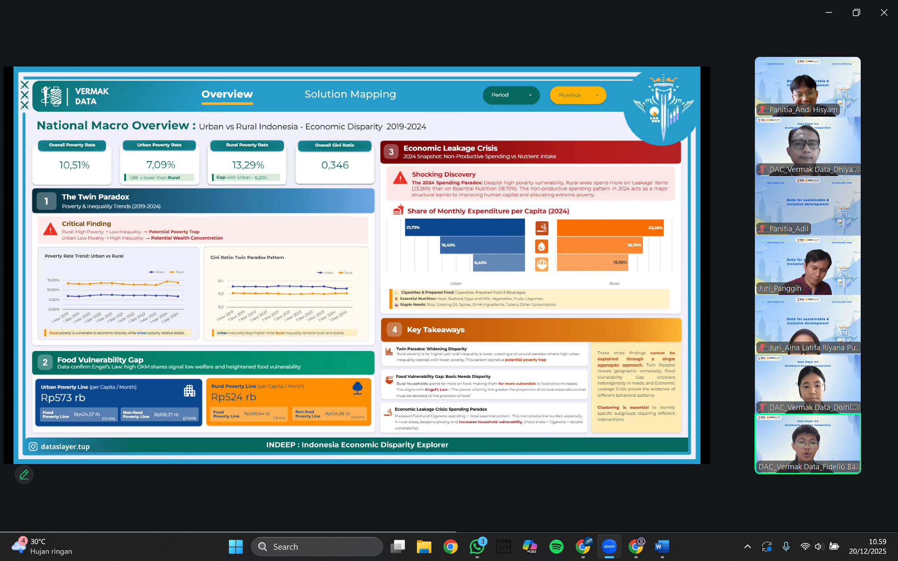

The Challenge
Understanding poverty and inequality in Indonesia is not just about numbers. The main challenge was fragmented socio-economic data spread across raw tables and reports, making it difficult to:
- Identify rural–urban inequality patterns
- Compare regions across time and geography
- Translate complex data into clear, actionable insights
Without proper visualization, important trends remained hidden and hard to communicate to decision-makers and the public.
The Solution
INDEEP was designed as a geographic-first interactive dashboard that transforms raw BPS Susenas data (2019–2024) into intuitive visual insights. Key solutions include:
- Interactive maps to explore poverty and inequality by region
- Trend charts to track changes over time
- Drill-down views from national to provincial levels
This approach allows users to move seamlessly from high-level patterns to regional insights, making complex socio-economic data easier to understand and discuss.

Final Presentation